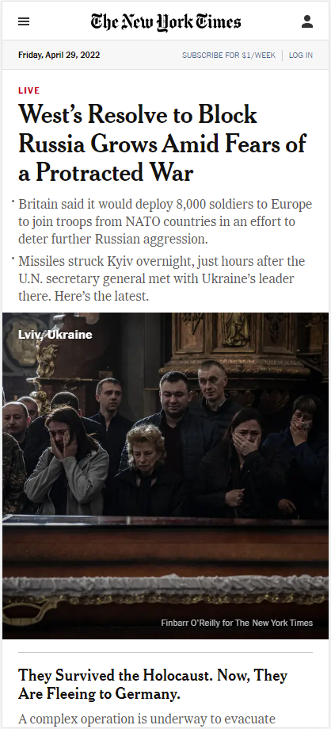
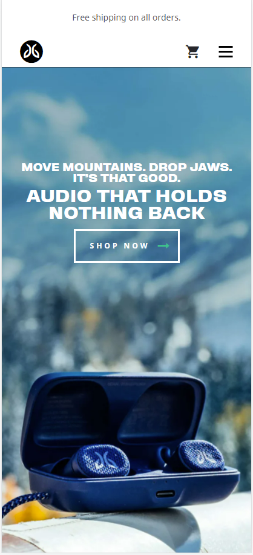
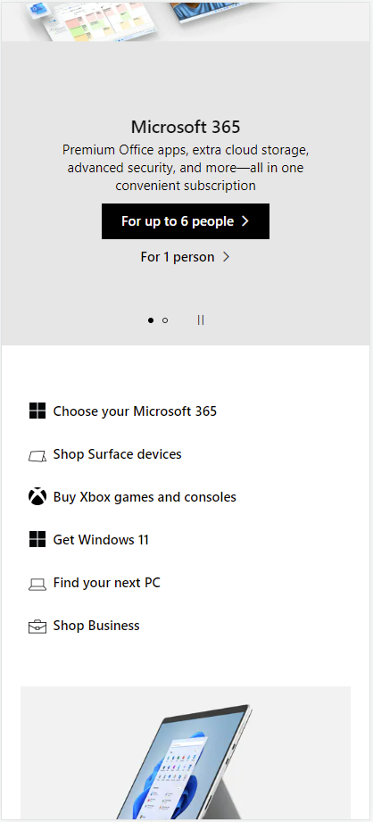

White Space and Clean Design
New York Times
nytimes.com The NY Times website is a great example of white space and clean design. The site is a wall of black text on white background with coloful graphics occassionally breaking up the space. The graphics provide a visual cue between article headlines and provide interest that encourage the user to pause and read headlines and summaries of the stories. I like that there isn't a ton of flourish to the page and that the headlines are able to be what attracts you to click and read.
Fitts' Law
Jaybird Sport
Fitts' Law talks about navigation on a website and specifically call to action buttons and their size and ease of use. Jaybird does well in this regard by keeping the mobile default view super simple. All the user sees initially is a great pic of the product and a large CTA "shop now" button that is centrally located. Upon further inspection you see the hamburger menu and shopping cart but they are smaller and less prominent. The CTA draws the user to click and progress into the site.
PARC: Repetition
Microsoft
Repetition relates to how elements and items are layed out consistantly on a webpage. With the Microsoft page this concept is well displayed. Each section alternates between a graphic with a light gray background and then descriptive text on a white background with blue CTA buttons. Everything is aligned and the graphics have good padding between the borders.